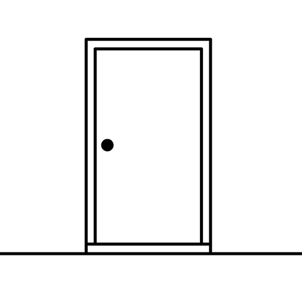

“Escape into your memories.”
The White Door é uma aventura point-and-click desenvolvida pela Rusty Lake e lançada em 9 de janeiro de 2020. O jogo acompanha Robert Hill, um homem que acorda em uma clínica de saúde mental sofrendo de uma grave perda de memória. Diferente dos jogos anteriores, The White Door apresenta uma estética predominantemente em preto e branco e utiliza uma tela dividida para mostrar o personagem e o ambiente ao mesmo tempo. A experiência é mais focada na narrativa e na recuperação das memórias de Robert, mantendo os enigmas e o clima surreal característicos da Rusty Lake.
Robert Hill acorda em uma clínica de saúde mental chamada The White Door, sem conseguir lembrar claramente quem é ou o que aconteceu com ele. Preso a uma rotina rigorosa, ele precisa seguir as atividades diárias da instituição enquanto explora seus sonhos e tenta recuperar as memórias que foram perdidas. Enquanto os dias passam, Robert começa a perceber que sua vida antes da clínica está relacionada a acontecimentos importantes do universo Rusty Lake. Suas lembranças, seus sonhos e os acontecimentos dentro da instituição revelam gradualmente pistas sobre seu passado, fazendo com que o jogador tente reconstruir sua história e descobrir o que realmente aconteceu com ele.